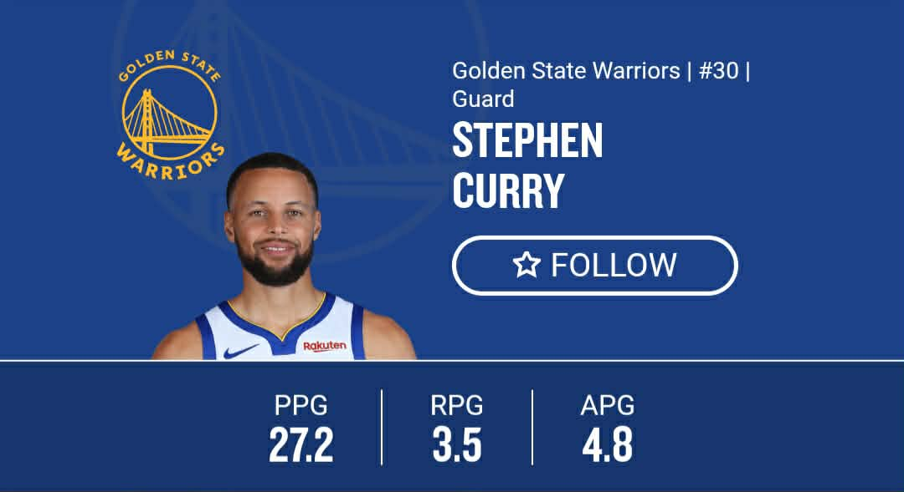
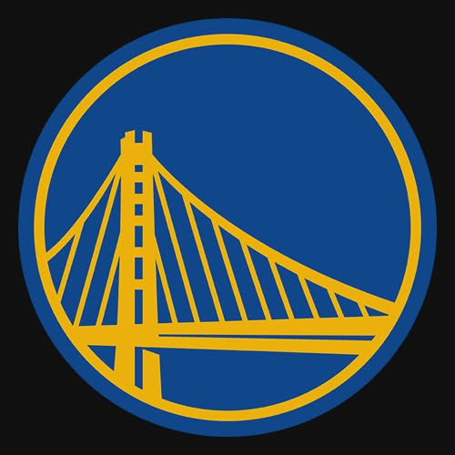
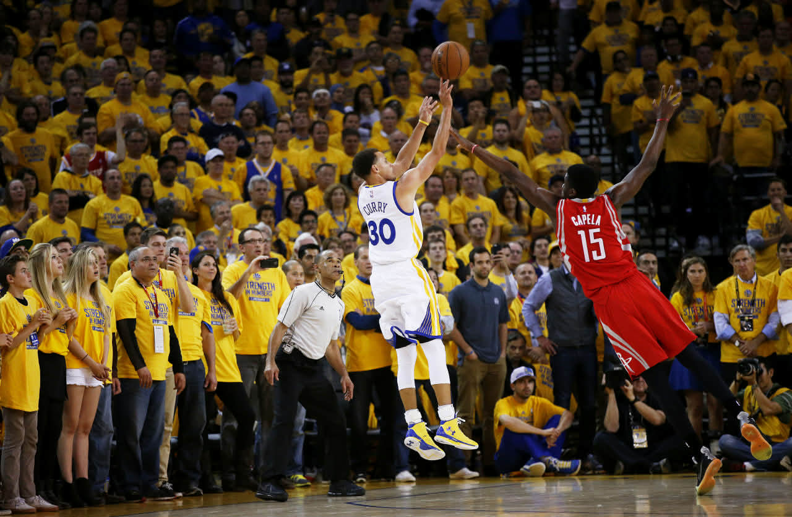

About Stephen Curry
Stephen Curry is a professional NBA player known for his incredible three-point shooting, ball handling, and leadership. He changed the way basketball is played by making long-range shots a major part of the game.

Early Life
Stephen Curry was born on March 14, 1988. He grew up in a basketball family and worked hard to improve his skills despite being underestimated early in his career.
Career Achievements
- 4× NBA Champion
- 2× NBA Most Valuable Player (MVP)
- NBA Finals MVP
- All-time leader in three-point field goals
- Multiple NBA All-Star selections
Current Points
Stephen Curry is still one of the NBA’s top scorers. In the current season, he averages around 27 points per game. His career total has passed 26,000 points, showing his consistency and greatness.
Stephen Curry’s Team
Stephen Curry plays for the Golden State Warriors, a team known for fast offense, teamwork, and championship success. Curry has played his entire NBA career with this team.
Greatest Shot
One of Curry’s most famous moments is his deep three-point shot taken far beyond the line, showing his confidence and clutch ability.
The Bay Area & Golden Gate Bridge
The Warriors represent San Francisco and the Bay Area. The Golden Gate Bridge is a famous symbol of the city and is often associated with the team’s identity.

Stephen Curry Basketball Game Video
Watch Stephen Curry in action during a real basketball game, showing his shooting, dribbling, and court vision.
Steph Curry IGNITES For 56 PTS In Orlando | February 28, 2024
1.7M views · 11 months ago
The Warriors defeated the Magic, 121-115 tonight in Orlando. Stephen Curry finished with a team-high 56 points along with 12 three-pointers and 4 rebounds for the Warriors, while Quinten Post tallied 18 points, 5 rebounds and 2 three-pointers in the game.